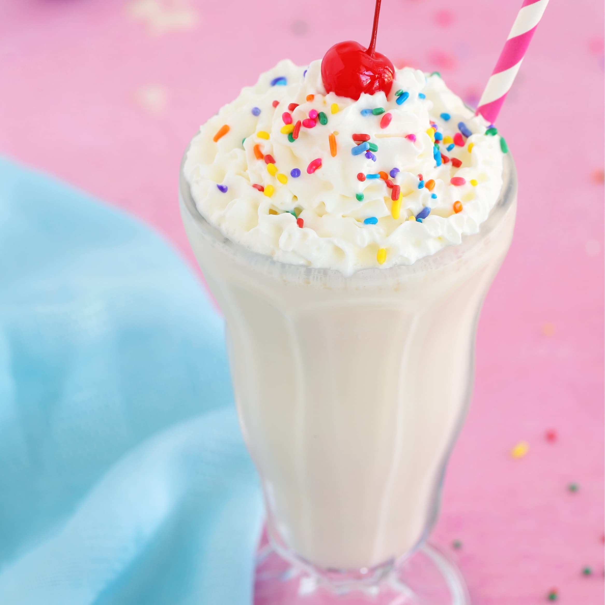

Burger Recipe

A classic American Cheese Burger Recipe. Best one you will find on the interent. Click the buttone below to see the full recipe!
Fries Recipe

A classic French Fries Recipe. Best one you will find on the interent. Click the buttone below to see the full recipe!
Milkshake Recipe

A classic Old School Milkshake Recipe. Best one you will find on the interent. Click the buttone below to see the full recipe!